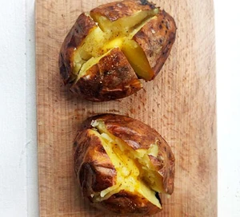

Return to Home Page
Baked Potatoes

Image source: BBC Good Food
Description
A simple recipe that's easy on the wallet to make fluffy, crispy baked potatoes that can serve up to 8 people. These
potatoes can also be served alongside cheese, baked beans or soured cream.
Ingredients
- 8 large baking potatoes
- 2 tsp vegetable oil
- 300ml soured cream (optional)
Steps
- Heat your oven to 220C/200C fan/gas 7.
- Brush some oil over each potato and place these on the top shelf in the oven.
-
Bake the potatoes for 20 mins, then turn the oven down to 190C/170C fan/gas 5 for an additional 45-60 mins
until it's crispy outside and soft inside.
- Form a cross in each potato's centre like the image above.
- If you'd like, place the soured cream on top of the potatoes and serve.
Recipe source: BBC Good Food